Code
library(tidyverse)
D <- read_csv("data/macro/inflation_WDI.csv")
oecd <- read_csv("data/macro/oced_codes.csv")
#biggerText <- jzPack::biggerText
# Merge in OECD indicators
D <- left_join(D,oecd)library(tidyverse)
D <- read_csv("data/macro/inflation_WDI.csv")
oecd <- read_csv("data/macro/oced_codes.csv")
#biggerText <- jzPack::biggerText
# Merge in OECD indicators
D <- left_join(D,oecd)In how many countries has inflation exceeded 10% in 2022:
D %>%
filter(year == 2022) %>%
mutate(over10 = ifelse(inflation > 10, 1, 0)) %>%
count(over10)# A tibble: 2 x 2
over10 n
<dbl> <int>
1 0 82
2 1 45D %>%
filter(year %in% c(2010:2022)) %>%
mutate(over10 = ifelse(inflation > 10, 1, 0)) %>%
group_by(year) %>%
summarise(n = n(),
over10 = sum(over10)) %>%
ggplot(aes(x=year,y=over10)) +
geom_col() +
labs(y="", x="Year",
title = "Number of countries with inflation 10%+",
caption = "Data: WDI")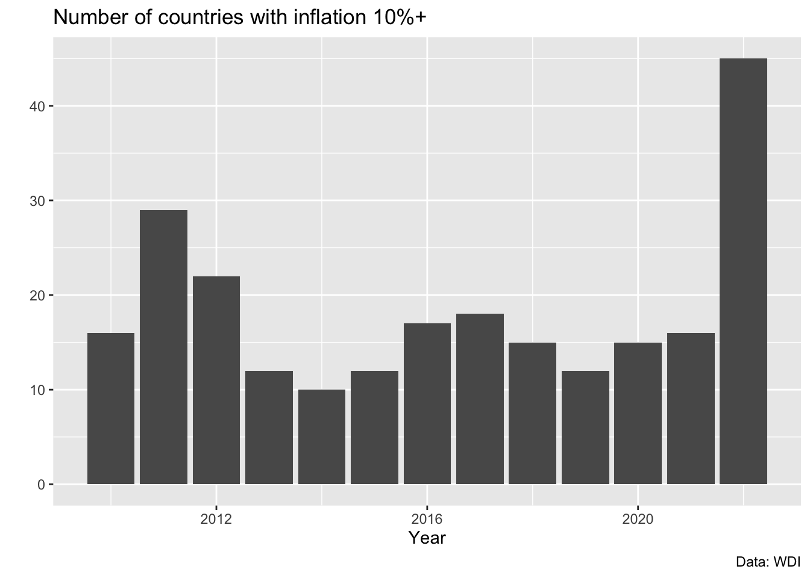
D %>%
filter(year %in% c(2010:2022)) %>%
mutate(over10 = ifelse(inflation > 10, 1, 0)) %>%
group_by(year) %>%
summarise(n = n(),
prop = sum(over10)/n) %>%
ggplot(aes(x=year,
y=prop)) +
geom_col() +
labs(y="", x="Year",
title = "Proportion of countries where inflation exceeded 10%",
caption = "Data: WDI")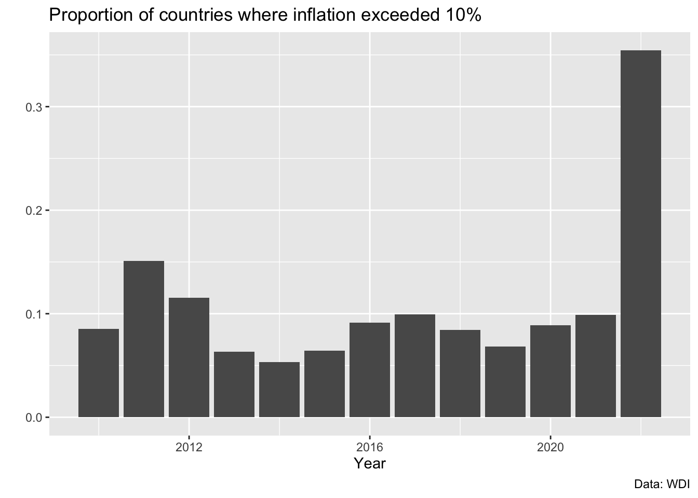
There are some obvious problems with the x-axis here, so let’s solve that, plus a few minor issues:
barplot_V2 <- D %>%
filter(year %in% c(2010:2022)) %>%
mutate(over10 = ifelse(inflation > 10, 1, 0)) %>%
group_by(year) %>%
summarise(n = n(),
prop = sum(over10)/n) %>%
ggplot(aes(x=year,
y=prop)) +
geom_col() +
labs(y="", x="Year",
title = "Proportion of countries where inflation exceeded 10%",
caption = "Data: WDI") +
scale_x_continuous(breaks = c(2010:2022)) +
scale_y_continuous(labels = scales::percent) +
theme(text = element_text(size=15)) +
theme_bw()
barplot_V2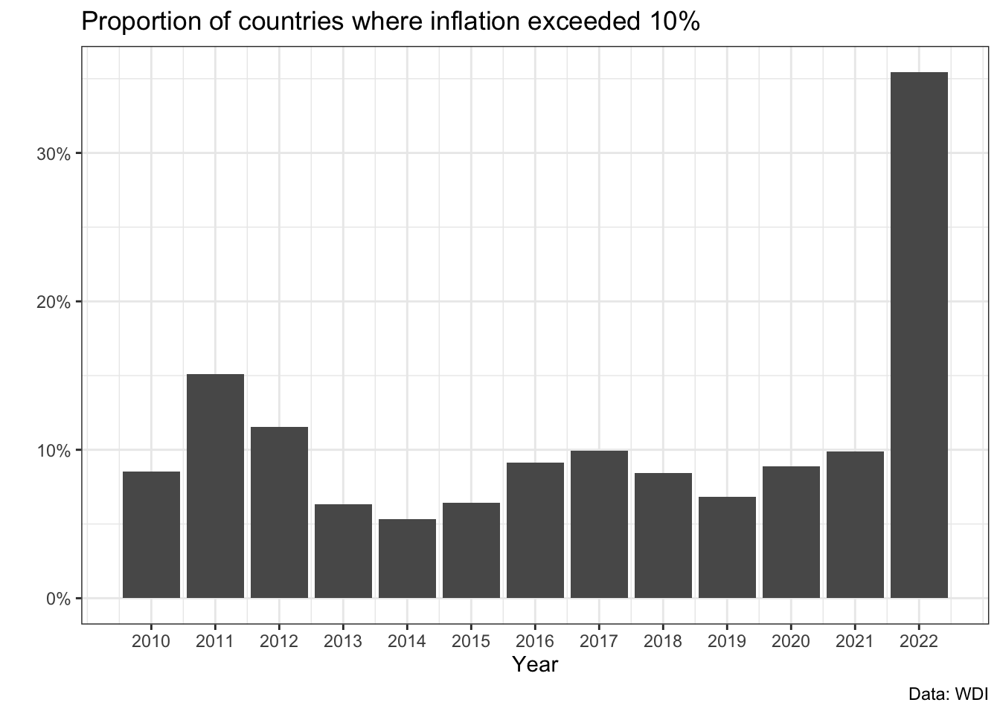
We improved the labels of both axes, and increased the font size.
The new version is reasonably good, but there are still unnecessary gridlines, right?
You could either use theme_classic() instead of theme_bw().
barplot_V2 +
theme_classic() 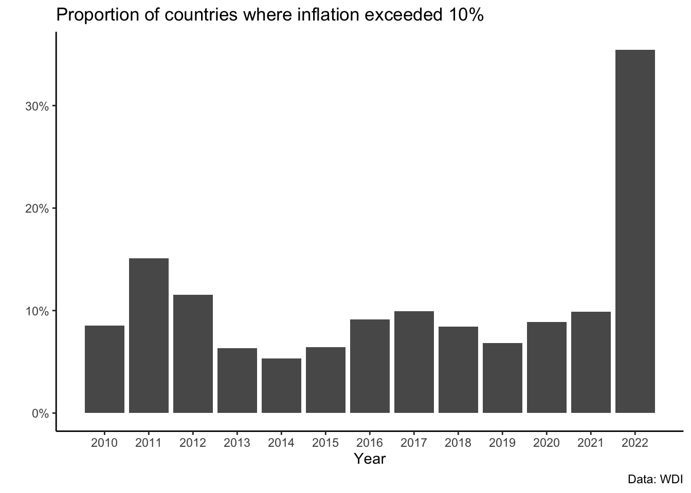
Or we can keep theme_bw() and make some adjustments:
barplot_V2 +
theme(panel.grid.minor.x = element_blank(),
panel.grid.major.x = element_blank())D %>%
filter(!is.na(inflation)) %>%
mutate(over10 = ifelse(inflation > 10, 1, 0)) %>%
group_by(year) %>%
ggplot(aes(x=year,
y=over10)) +
geom_col() +
theme_bw() +
theme(text = element_text(size=14)) +
labs(y="", x="Year",
subtitle = "Number of countries where inflation exceeded 10%",
caption = "Data: WDI.")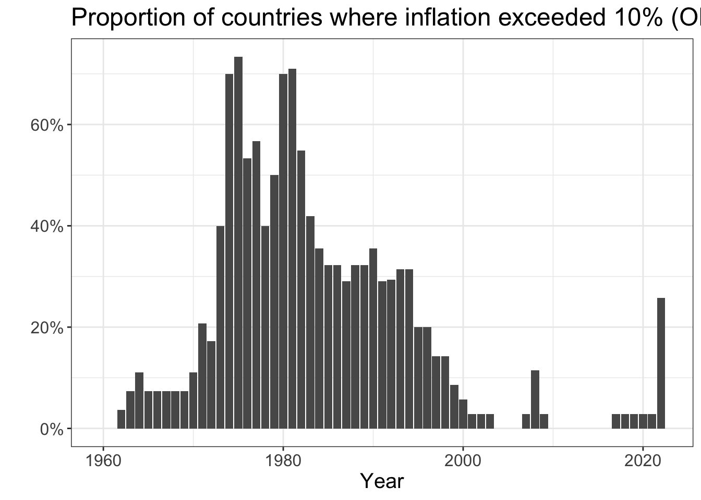
D %>% filter(OECD==1) %>%
filter(!is.na(inflation)) %>%
mutate(over10 = ifelse(inflation > 10, 1, 0)) %>%
group_by(year) %>%
summarise(n = n(),
prop = sum(over10)/n) %>%
ggplot(aes(x=year,
y=prop)) +
geom_col() +
theme_bw() +
theme(text = element_text(size=15)) +
scale_y_continuous(labels = scales::percent) +
labs(y="", x="Year",
title = "Proportion of countries where inflation exceeded 10%\n(OECD countries only)")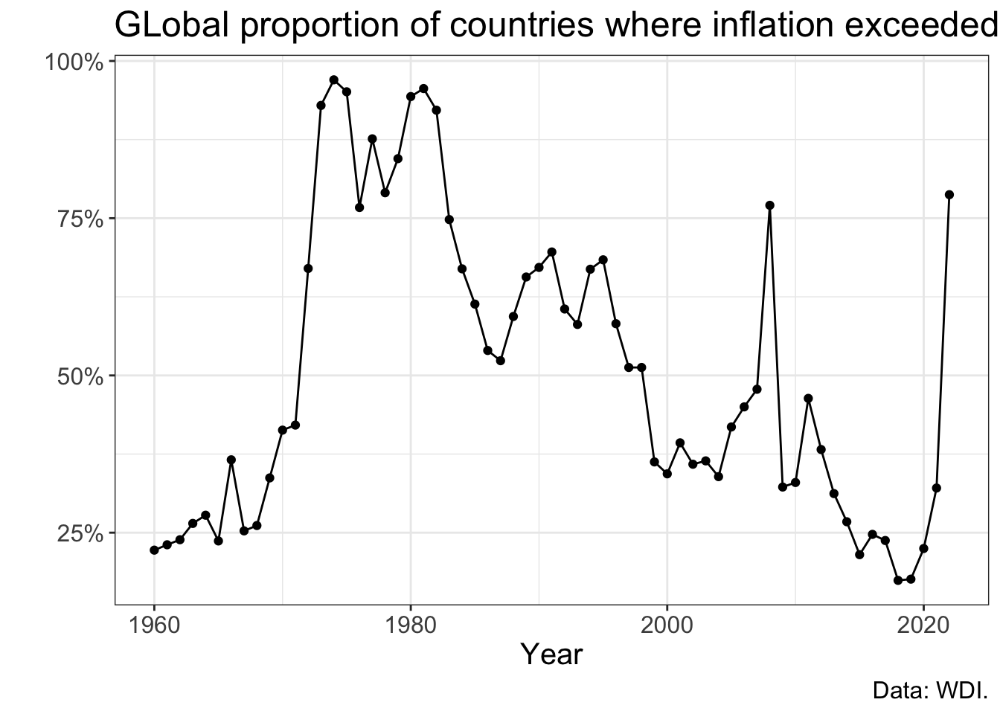
D %>%
mutate(over5 = ifelse(inflation > 5, 1, 0)) %>%
group_by(year) %>%
summarise(n = n(),
prop = sum(over5)/n) %>%
ggplot(aes(x=year,
y=prop)) +
geom_line() + geom_point() +
theme_bw() +
theme(text = element_text(size=15)) +
scale_y_continuous(labels = scales::percent) +
labs(y="", x="Year",
subtitle = "Global proportion of countries where inflation exceeded 5%",
caption = "Data: WDI.")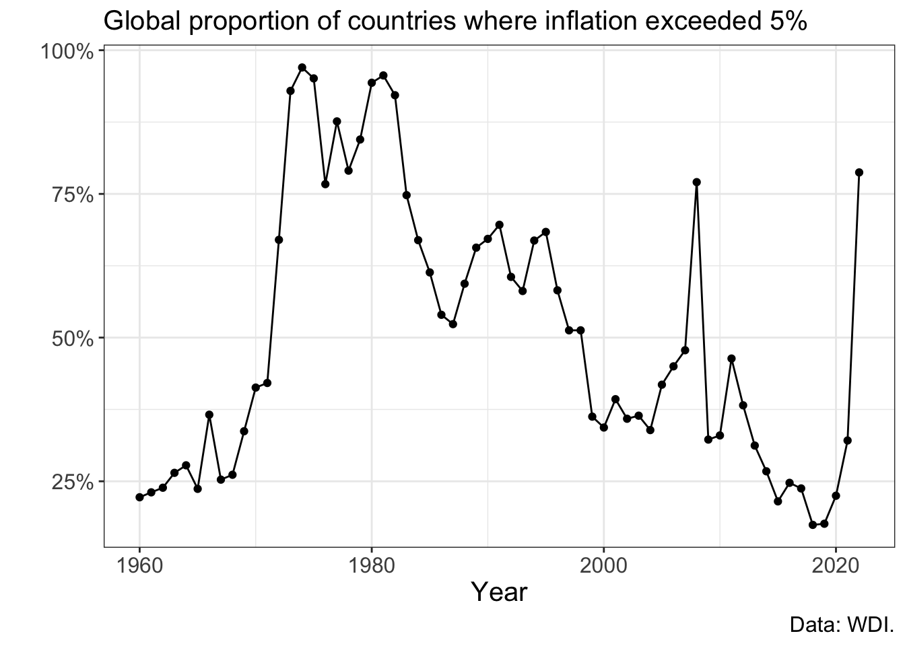
D %>% filter(OECD==1) %>%
filter(!is.na(inflation)) %>%
group_by(year) %>%
summarise(M = median(inflation)) %>%
ggplot(aes(x=year,
y=M)) +
# geom_point() + geom_line() +
geom_col() +
theme_bw() +
theme(text = element_text(size=15)) +
labs(y="", x="Year",
title = "Median inflation in OECD countries")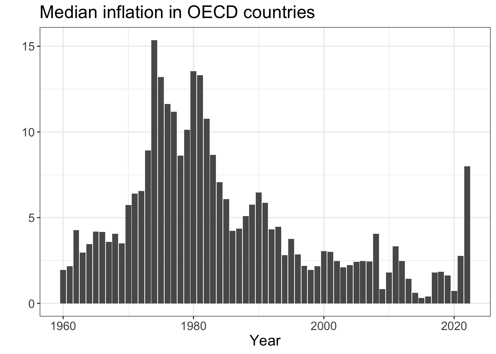
Get data on stocks prices:
library(tidyquant)
stocks <- tq_get(c("NVDA", "AVGO","^GSPC"),
from = "2022-01-15",
to = "2024-06-05")stocks %>%
ggplot(aes(x = date, y = adjusted, color = symbol)) +
geom_line() +
theme_minimal() +
labs(title = "NVIDIA vs Broadcom Stock Prices",
y = "Adjusted Price",
color = "Stock")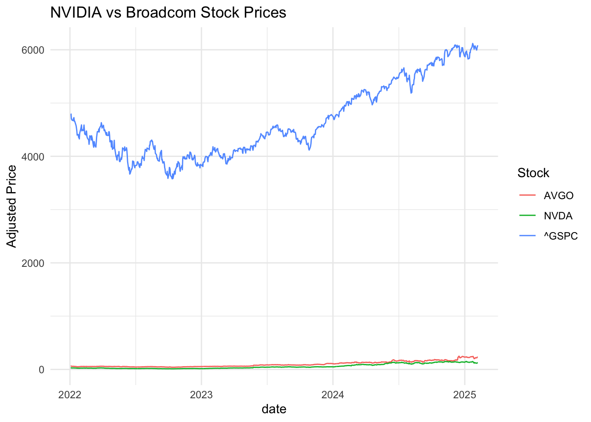
This is not informative (we can only see what’s going on for one of the series).
How about this?
stocks %>%
ggplot(aes(x = date, y = adjusted, color = symbol)) +
geom_line() +
facet_grid( ~ symbol)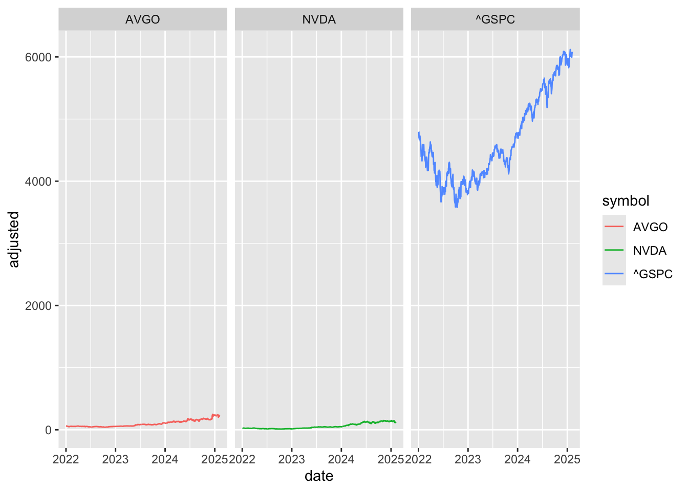
Or perhaps this?
stocks %>%
ggplot(aes(x = date, y = adjusted, color = symbol)) +
geom_line() +
facet_wrap( ~ symbol,scales="free_y")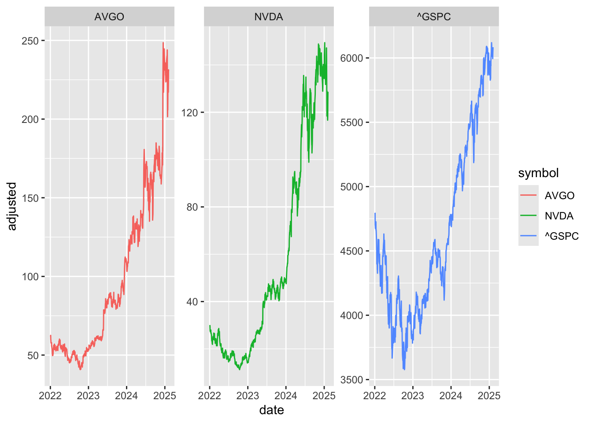
Slightly better, but do we really care about price? Price movements - returns and losses - are probably more important to investors.
So, calculate returns
returns <- stocks %>%
group_by(symbol) %>%
tq_transmute(select = adjusted,
mutate_fun = periodReturn,
period = "daily",
col_rename = "ret") %>%
ungroup() %>%
pivot_wider(names_from = symbol,
values_from = ret) %>%
na.omit()Calculate rolling correlations:
returns$roll_cor <- zoo::rollapply(data = returns[, c("NVDA", "AVGO")],
width = 30,
FUN = function(x) cor(x[,1], x[,2]),
by.column = FALSE,
align = "right",
fill = NA)
returns$roll_corNVSP <- zoo::rollapply(data = returns[, c("NVDA", "^GSPC")],
width = 60,
FUN = function(x) cor(x[,1], x[,2]),
by.column = FALSE,
align = "right",
fill = NA)30-Day Rolling Correlation of Daily Returns: NVIDIA vs Broadcom:
returns %>%
filter(date >= "2022-04-01") %>%
ggplot(aes(x = date, y = roll_cor)) +
geom_line(color = "blue") +
geom_hline(yintercept = 0, linetype = "dashed", color = "red") +
theme_minimal() +
labs(subtitle = "30-Day Rolling Correlation of Daily Returns: NVIDIA vs Broadcom",
title = "Do semiconductor industry giants move together?",
y = "Correlation Coefficient",
x = "Date") +
scale_y_continuous(limits = c(-.5, 1))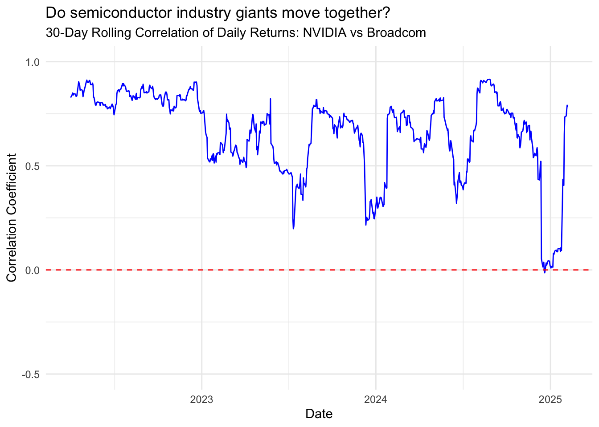
returns %>%
filter(date >= "2022-04-01") %>%
ggplot(aes(x = date, y = roll_corNVSP)) +
geom_line(color = "blue") +
geom_hline(yintercept = 0, linetype = "dashed", color = "red") +
theme_minimal() +
labs(subtitle = "60-Day Rolling Correlation of Daily Returns: NVIDIA vs SP500",
title = "Do semiconductor industry giants move together?",
y = "Correlation Coefficient",
x = "Date") +
scale_y_continuous(limits = c(-.5, 1))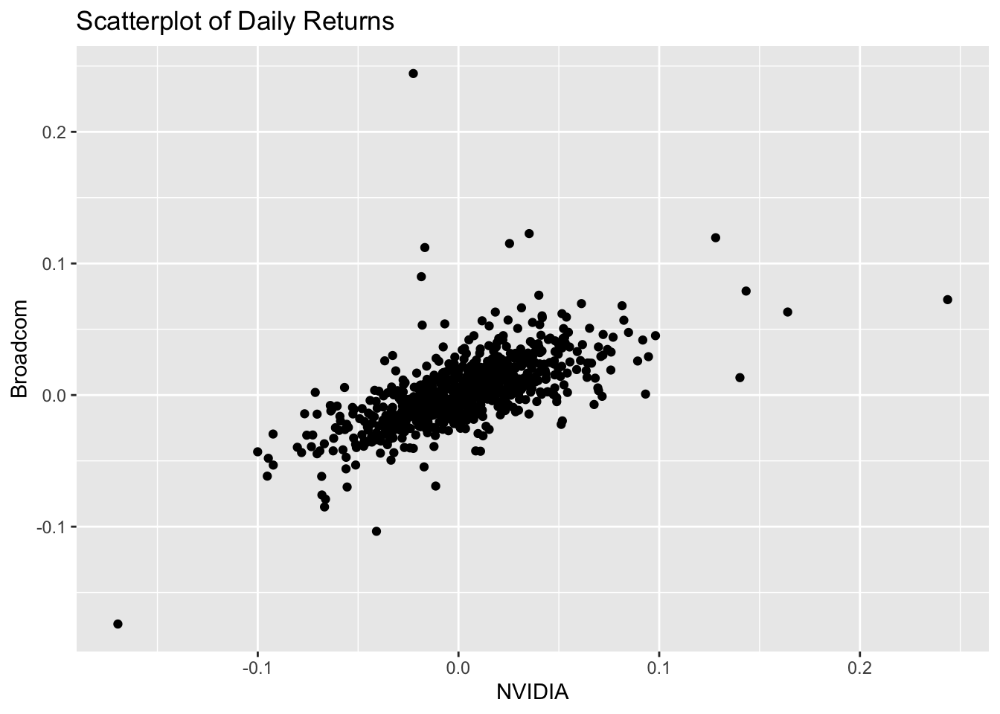
Scatterplots of returns
ggplot(returns, aes(x = NVDA, y = AVGO)) +
geom_point() +
geom_smooth(method = "lm") +
labs(title = "Scatterplot of Daily Returns",
x = "NVIDIA",
y = "Broadcom") +
geom_abline(intercept = 0, slope = 1,
color = "red3",linetype=2,linewidth=1) 
ggplot(returns, aes(x = NVDA, y = AVGO)) +
geom_point() +
labs(title = "Scatterplot of Daily Returns",
x = "NVIDIA",
y = "Broadcom")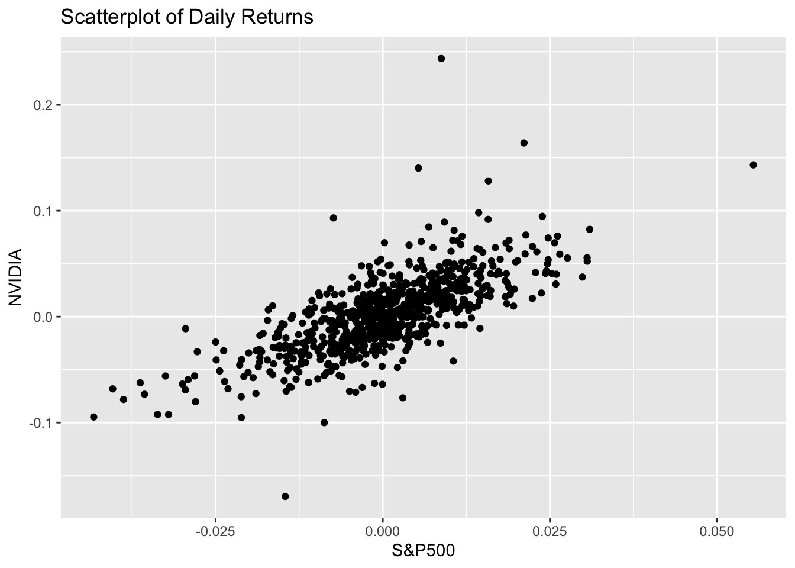
ggplot(returns, aes(x = `^GSPC`, y = AVGO)) +
geom_point() +
labs(title = "Scatterplot of Daily Returns",
x = "S&P500",
y = "Broadcom")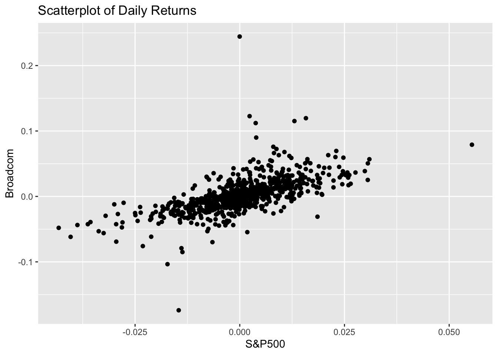
ggplot(returns, aes(x = `^GSPC`, y = NVDA)) +
geom_point() +
labs(title = "Scatterplot of Daily Returns",
x = "S&P500",
y = "NVIDIA")
Let’s also look at correlation during different market conditions
returns %>%
mutate(year = year(date)) %>%
group_by(year) %>%
summarize(correlation = cor(NVDA, AVGO)) %>%
print()# A tibble: 4 x 2
year correlation
<dbl> <dbl>
1 2022 0.828
2 2023 0.532
3 2024 0.568
4 2025 0.796returns %>% mutate(ym = floor_date(date,"month")) %>%
group_by(ym) %>%
summarize(correlation = cor(NVDA, `^GSPC`)) %>%
ggplot(aes(x = ym, y = correlation)) +
geom_col()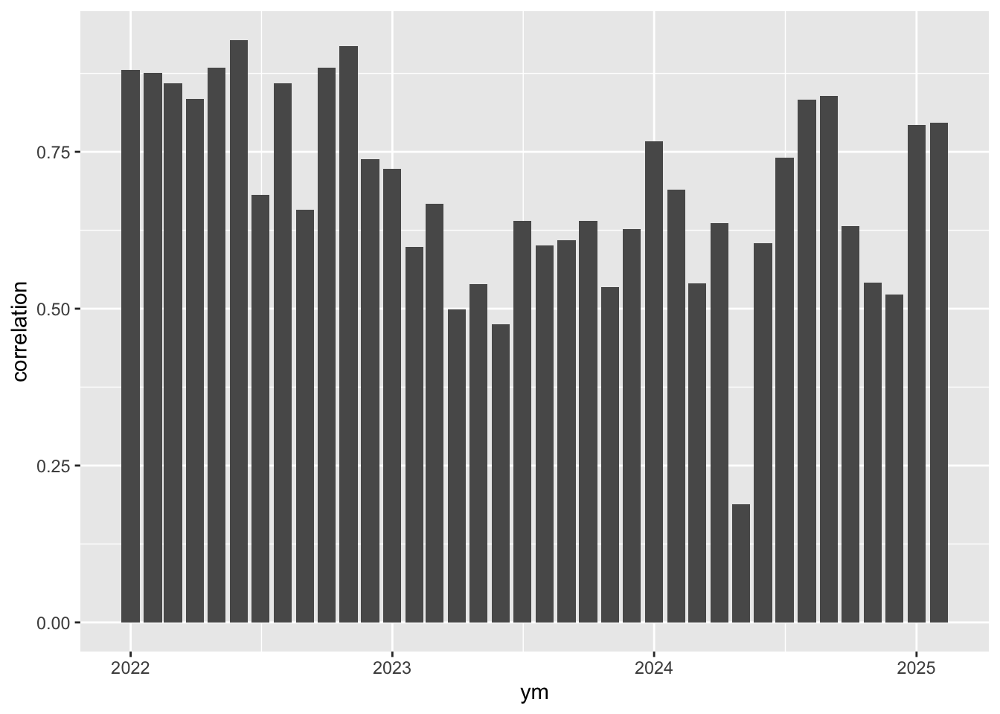